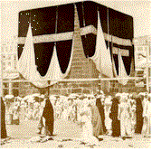
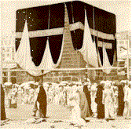
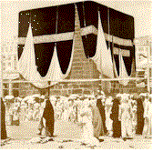

Resources for religious/spiritual interpreting (Part II)
David Bar-Tzur
Created 10 April 2000, links updated monthly with the help of LinkAlarm.

 


this list, or click on a specific religion in the list above
 Web sitesWeb sites
Web sitesWeb sites Barron's: Mind, body, & spirit.
Barron's: Mind, body, & spirit.
Murray, E. New Age Spirituality.
New Age - Wikipedia, the free encyclopedia.
Open directory project: New Age.
Web sitesAffiliated New Thought Network.
The Association of Global Net Thought.
New Thought - Affiliated New Thought network.
Religious Science International.
A Season for Non-Violence, Oakland.
United Church of Religious Science.
Web sitesSolar Temple (International Chivalric Order Solar Tradition).
Web sitesU.S. Grand Lodge, Ordo Templi Orientis.
Web sitesOsho - Ontario Consultants for Religious Tolerance.
 Books
BooksElevated Therapy Pagan and Wiccan bookstore.
Web sitesBeliefnet - Paganism and Earth-based.
Deaf Pagan Crossroads. A blog site where Deaf, Hard of Hearing, and Hearing individuals can come together to learn about and discuss various aspects of spirituality, with a special focus on Earth-Based Faiths. While most of Ocean’s posts here talk about the various aspects of Paganism, it is recognized and respected that there are many ways of enlightenment and many paths to the Divine. Thus all are welcomed here, as long as you come in the spirit of love, trust, and respect for others.
Deafsolitary. This is a discussion group for Solitary practitioners of all the Pagan Paths, who are Deaf, HoH, Terps, or friends of the Deaf. We won't proselytize or try to make you follow our personal beliefs or trads, and ask the same of all. We agree to disagree, and debate without flaming or put-downs. We have no High Priest, High Priestess, or High Horseriders here and almost anything -within reason- may be discussed.
Pagan/Magick/Occult dictionary.
Web sitesHarrison, P.
 (March 10, 1997) History of Pantheism.
(March 10, 1997) History of Pantheism.
 (April 27, 1999) Scientific
Pantheism: An empirical religion for the Third Millennium. This is the most extensive site and has a plethora of articles and links.
(April 27, 1999) Scientific
Pantheism: An empirical religion for the Third Millennium. This is the most extensive site and has a plethora of articles and links.
Harrison, P. & A. Mueller (nd) Pantheism - Facets of religion.
Trobee, M. (August 16, 1997) Pantheism: A Religion For All.
Web sitesMamatas, N. (July 28, 2002). The process church of the final judgment.
ReligiousTolerance.org - The Process: Church of the Final Judgement.
Web sitesRamtha's School of Enlightenment, the school of ancient wisdom.
Web sitesDread history (shown through images).
Napti, P. Jamaicans of Ethiopian origin and the Rastafarian faith.
Ras Adam's Haile Selassie/Rastafari links.
Web sitesBreath Awareness Center for Rebirthing.
Vivation - The skill of happiness.
Web sitesGypsy Lore Society Collections.
Roma (Gypsies) - Ontario Consultants for Religious Tolerance.
Web sitesSacrifice of the lambs by Samaritans. There are a total of four files. Click on [More photographs of the same subject] at the bottom of each page.
Grabbe, L. L. (n.d.) The Samaritans in the Hasmonean Period.
Samaritans - Encyclopaedia of the Orient.
Web sitesVodoun Culture. (in English and French) (Flavodoun)
Vodun - Ontario Consultants for Religious Tolerance.
Books Mailing lists Web sites
Mailing lists Web sitesCannylink. Satanism.
Crabtree, V. (August 07, 2002). Satanists: A to Z of people of significance to Satanism.
Ontario Consultants on religious tolerance. Satanism.
Web sitesWeb sitesAutobiography of a Yogi by Paramhansa Yogananda.
Self-Realization Fellowship home page.
Self-Realization Fellowship, SRF, Paramahansa Yogananda, Spirituality, Alternative...
The Sweet Love of Paramahansa Yogananda webring.
Web sitesThe Institute for Contemporary Shamanistic Study.
Web sitesThe dawning world: Shinreikyo.
BooksWeb sitesShinto - Ontario Consultants on religious tolerance.
Yamada, N. A. (n.d.) Shinto, the Way of the Gods.
Web sitesLinks to Sai related web pages.
Shri Sai Baba - Shirdi home page.
BooksMagida, A. (ed.) (1999). How to be a perfect stranger: A guide to etiquette in other people's religious ceremonies. Woodstock, VT: Jewish Lights Publishing. Vol. 2, 318-347. [Sections: History and beliefs, The basic service, Holy days and festivals, Life cycle events, Home celebrations.]
Sikhism Home Page. (Sandeep Singh Brar)
Sikhism - Religious tolerance.com.
Web sitesAnomalies: The story of Spiritualism.
Countering Fundamentalist condemnation of Spiritualism.
Fry, C. Physical mediumship in the Bible.
National Spiritualist Association of Churches.
Spiritual oracle community board.
Spiritualists' National Union (England).
Books. Alibris. Use search feature for "Sri Chinmoy".
Web sitesSri Chimnoy: the official complete source.
A Sri Chimnoy spiritual radio weblog.
Web sitesGuzman, R. Immaterial girl.
Ross, R. Ching Hai.
Web sitesBooksMitchell, D., C. Mitchell and R. Ofshe. The Light on Synanon.
Web sitesSynanon, founded by Charles Dederich.
Web sitesBooksWeb sitesAcademia Sinica Text Retrieval System: encoded in Big5.
Geometry.Net. Religion: Taoism
Pregadio, F. The Golden Elixir.
Su T. Chinese Philosophy page.
Taoism - Ontario Consultants on religious tolerance.
Su T. Taoist glossary.
 Journals, newspapers and newsletters. Web sites
Journals, newspapers and newsletters. Web sitesTenrikyo Mission Headquarters in America.
Web sitesAlternative Religions
Education Network. (1998, September 27). Church of All Worlds Official Communication.
The Church of All Worlds archive.
An open letter by Diane Vera to GREEN EGG magazine.
Web sitesA collection of Ecclesia Gnostica Catholica and Gnostic mass materials.
Ecclesia Gnostica Catholica Hermetica.
Thelema - Ontario Consultants for Religious Tolerance.
BooksPublications - United Lodge of Theosophists.
Theosophical University Press online.
Journals, newspapers and newsletters CDs, DVDs, & videotapes. Mailing lists Discussion list at Blavatsky.net.
Web sitesde Purucker, G. (1999) Encyclopedic Theosophical glossary.
The Theosophical Society - Adyar.
CDs, DVDs, & videotapes. Mailing lists Discussion list at Blavatsky.net.
Web sitesde Purucker, G. (1999) Encyclopedic Theosophical glossary.
The Theosophical Society - Adyar.
UFO CULTS
Web sitesAbout.com. Alternative religions: UFO cults.
Finney, D. UFO CULTS.
Wikipedia. UFO religion.
UNIFICATION CHURCH (HOLY SPIRIT ASSOCIATION FOR THE UNIFICATION OF WORLD CHRISTIANITY)
Web sitesLandslide - The Unification Movement and/or Sun Myung Moon.
Rev. Sun Myung Moon - Messiah - True Love King.Unificationism - Sun Myung Moon's Unification Church.
Unificationism, a critique and counter proposal.
Wikipedia. Unification movement.
Welcome to the Unification Church.
UNITARIAN UNIVERSALISM
BooksMagida, A. (ed.) (1999). How to be a perfect stranger: A guide to etiquette in other people's religious ceremonies. Woodstock, VT: Jewish Lights Publishing. Vol. 2, 348-369. [Sections: History and beliefs, The basic service, Holy days and festivals, Life cycle events, Home celebrations.]
 Education. Mailing lists Journals, newspapers and newslettersFerment. A downloadable pdf file to subscribe.
Web sites
Education. Mailing lists Journals, newspapers and newslettersFerment. A downloadable pdf file to subscribe.
Web sites Bar-Tzur, D. Songs and ritual texts.
Beliefnet - Unitarian Universalist.
Encarta. Unitarianism. Introduction, History, Basic Doctrine.
Susalski, C. (n.d.) Unitarian Universalist.
Unitarian Universalism - Ontario Consultants on religious tolerance.
Unitarian Universalist Association.
Wikipedia. Unitarianism.
Bar-Tzur, D. Songs and ritual texts.
Beliefnet - Unitarian Universalist.
Encarta. Unitarianism. Introduction, History, Basic Doctrine.
Susalski, C. (n.d.) Unitarian Universalist.
Unitarian Universalism - Ontario Consultants on religious tolerance.
Unitarian Universalist Association.
Wikipedia. Unitarianism.
UNIVERSAL LIFE CHURCH
Web sitesWelcome to the Universal Life Church.
URANTIA BROTHERHOOD
Web sites
WICCA
Web sitesEncarta. Witchcraft - IV. Modern Witchcraft. Part of a larger article on Witchcraft. You could read the whole article for a context or focus on this three paragraph orientation for what is happening specifically in Wicca.
Wicca - Ontario Consultants for Religious Tolerance.
The Witches' League for Public Awareness.
YEZIDISM
Web sitesAbout.com. Yezidism.
Encylopaedia of the Orient. Yazidism or alternate site.
Dadrawala, N. H. The Yezidis of Kurdistan - Are they really Zoroastrians?
YOGA
 CDs, DVDs, & videotapesDeaf Yoga for Beginners (DVD).
Web sitesAnswers.com. Yoga.
Steffensen, S. (2006, May-June). Lila Lolling: Teaching Yoga to the Deaf Community.
Wikipedia. Yoga.
CDs, DVDs, & videotapesDeaf Yoga for Beginners (DVD).
Web sitesAnswers.com. Yoga.
Steffensen, S. (2006, May-June). Lila Lolling: Teaching Yoga to the Deaf Community.
Wikipedia. Yoga.
ZOROASTRIANISM
BooksWeb sitesAVESTA. Zoroastrian archives.
Ontario Consultants for Religious Tolerance. Zoroastrianism.